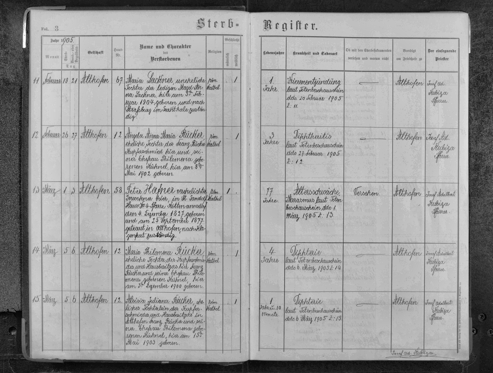
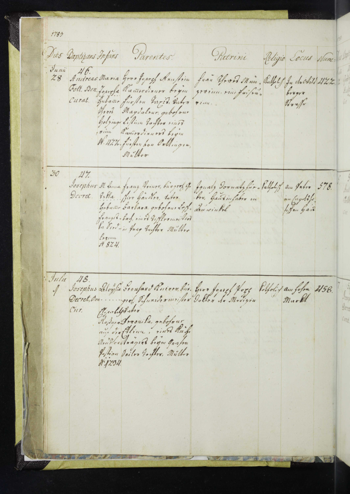
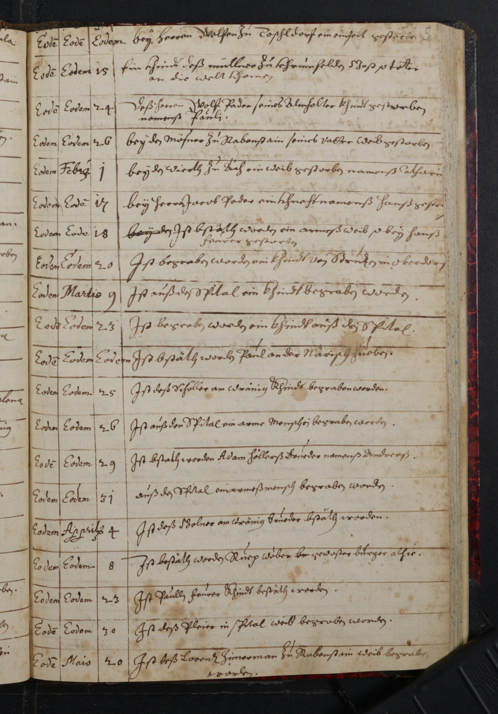

Research Background & Motivation
Personal Introduction
Name: Jestin Roy
Position: Research Assistant (RA) under Professor
Paul, Department of Economics
Education: Master of Data Science student
Experience: AI Engineer & Full-Stack Developer (2
years industrial experience)
Project Duration: June 2025 - Present (Winter
Research Scholarship Program)
The Research Challenge
Documents: Austrian parish records from 1800-1920s
(Sterbbücher [death registers], Taufe Bücher [baptism records])
Script Type: Sütterlin/Kurrent script (historical
German cursive and Gothic scripts)
Research Goal: Accurate digitization for historical
scholarship, genealogical research, and cultural heritage preservation
Why Sütterlin/Kurrent Scripts Are Challenging
-
Sütterlin (1911+): German Gothic cursive with sharp
angles and connected letterforms
-
Kurrent (1600s-1900s): Historical German script
with unique character forms (ſ, ä, ö, ü variations)
-
Visual Complexity: Ligatures, abbreviations, and
archaic letterforms unfamiliar to standard ML models
-
Training Data Gap: Modern OCR models trained on
20th-21st century text, not 19th-century German scripts
The Problem: Predecessor Approach (trOCR + Danish Fine-Tuning)
Why Character-Level OCR Failed
❌ Language Mismatch: Trained on Danish, applied to German
Sütterlin/Kurrent
❌ Script Mismatch: Danish modern text ≠ 19th-century Austrian
Gothic scripts
❌ No Visual Reasoning: Character-by-character OCR cannot understand
document context
❌ No Layout Understanding: Cannot distinguish table structure from
continuous text
❌ Limited Transfer: Extensive fine-tuning required for each new
language/script
The Methodological Breakthrough
Three Phases of the Research
1
Initial Baseline
trOCR (Danish fine-tuning)
Poor generalization
2
Ground Truth Creation
Closed-Source LLMs (GPT-4.1)
Visual reasoning
3
VLM Evaluation
Qwen3-VL vs Chandra
Benchmarking
Why Closed-Source LLMs for Ground Truth?
| Capability |
Fine-Tuning Approach |
Ground Truth Approach |
| Visual Reasoning |
✗ None (character-level only) |
✓ Yes (holistic understanding) |
| Handwriting Context |
✗ Limited (language-specific) |
✓ Full (visual + semantic) |
| Domain Adaptation Time |
2-3 months |
Minutes |
| Accuracy on Historical Scripts |
50-70% |
95%+ (human-level) |
| Cost to Scale |
High (annotation labor) |
Low (same model) |
| Generalization Ability |
Poor (language-specific) |
Excellent (cross-language) |
Current Investigation
Research Question
Can we achieve closed-source LLM performance using open-source
Vision Language Models (VLMs) at lower cost and without fine-tuning?
Models Being Evaluated
-
Qwen3-VL-32B: Open-source Vision Language Model
trained on billions of image-text pairs
-
Chandra OCR: Traditional specialized OCR engine
(character detection and recognition)
-
Against Ground Truth: GPT-4.1 and Gemini 2.5 Pro
(visual reasoning, context understanding)
-
Dataset: Austrian parish records (Sütterlin/Kurrent
scripts, 1643-1920)
Benchmark Results - Performance Metrics
Reference Images: Proof-of-Concept Test Documents

Althofen_Sterbbuch_TomVII_1905-1920_page_006.jpg
Era: Modern (1905-1920)
Type: Sterbbuch (Death Register)
Performance: 81.27% Word F1 ✓
Production-Ready Accuracy

Wein_Neiderosterich_MariaBrunn_1887_TaufeBuch_0012.jpg
Era: Late 19th Century (1887)
Type: Taufebuch (Baptism Register)
Performance: 61.54% Word F1 ⚠
Usable + Manual Verification

Vienna_1783_StPeter_TaufeBuch_0017.jpg
Era: 18th Century (1783)
Type: Taufebuch (Baptism Register)
Performance: 37.01% Word F1 ⚠
UTF-8 Fix: 0.92% → 37.01% (40x improvement)

Althofen_SterbBuch_1643_A05_022-1_00007.jpg
Era: 17th Century (1643)
Type: Sterbbuch (Death Register)
Performance: 11.62% Word F1 ✗
Pure Kurrent - Not Viable Without Specialized Training
Overall Performance Comparison
Word F1 Score
84.96%
Qwen3-VL
+4.44% vs Chandra
Word Recall
86.81%
Qwen3-VL
+8.61% vs Chandra
Character F1
97.49%
Qwen3-VL
+0.90% vs Chandra
Key Insight: The Character-Layout Gap
Critical Finding
Both models achieve 97% character-level accuracy, but only 85%
word-level accuracy.
Implication: Layout understanding (not character
recognition) is the primary bottleneck.
Models successfully read individual characters but struggle to
preserve word boundaries and table structure.
Performance by Document Era (Temporal Trend)
| Era |
Period |
Qwen3-VL Word F1 |
Status |
| Modern |
1905-1920 |
81.27% |
✓ Production-Ready |
| Late 19th Century |
1887 |
61.54% |
⚠ Usable + Verification |
| 18th Century |
1783 |
37.01% |
⚠ High Manual Effort |
| 17th Century |
1643 |
11.62% |
✗ Not Viable |
Critical Discovery: UTF-8 Encoding Impact
Vienna1783 Case Study - 40x Improvement
Before proper UTF-8 encoding: 0.92% Word F1
(catastrophic)
After UTF-8 fix: 37.01% Word F1 (restored
usability)
Lesson: Data quality validation is as important as
model selection. Character encoding errors can destroy benchmark
reliability.
Infrastructure & Resource Constraints: The Critical Factor
Model Size & Memory Requirements
Chandra OCR
7B
Parameters (lightweight)
Memory: 19 GB per instance
Can
parallelize 10x on Nectar
Total RAM needed: ~190 GB
✓ Well within server capacity
Qwen3-VL
32B
Parameters (very heavy)
Memory: 60+ GB per instance
Cannot
safely parallelize
10x instances = 600+ GB RAM
✗ EXCEEDS A100 GPU capacity
Why Large VLMs Cause System Collapse
⚠️ Infrastructure Risk: Qwen3-VL Parallelization Hazard
Problem: Qwen3-VL's 32B parameters = 60+ GB memory
footprint per instance
Parallelization Attempt (10 workers):
• Memory needed: ~600+ GB VRAM
• Even latest A100 GPUs: Max ~320 GB cluster capacity
• Result: Server memory overflow → Kernel panic → System crash
Production Impact: Cannot achieve HPC
parallelization benefits. Single-instance processing returns us to
the original 13-minute bottleneck. Process 10,000 images in ~90
days, not 2 days.
Chandra OCR: Infrastructure-Efficient Solution
| Metric |
Chandra OCR |
Qwen3-VL |
| Model Size |
7B parameters |
32B parameters |
| Memory per Instance |
19 GB |
60+ GB |
| Safe Parallelization (10 workers) |
190 GB total ✓ |
600+ GB total ✗ |
| A100 GPU Cluster Capacity |
~320 GB available |
Insufficient |
| Crash Risk with Parallelization |
Safe margin |
HIGH - Server collapse |
| Processing 10,000 images |
~2 days (parallelized) |
~90 days (single instance) |
| Accuracy Trade-Off |
80.52% F1 |
84.96% F1 |
🖥️ Nectar HPC Infrastructure Constraints
Available Resources:
• GPU Cluster: Multiple A100 GPUs with ~320 GB combined VRAM
• CPU RAM: Limited (<400 GB per node)
• Network bandwidth: 100 Gbps (sufficient for I/O)
Design Constraint: Qwen3-VL's 60+ GB footprint
eliminates parallelization. Chandra's 19 GB enables 10x parallel
workers safely.
Computational Trade-Off Analysis
Processing Time Comparison
Chandra OCR
2-3 min
per test image
(Single run)
Qwen3-VL-32B
13 min
per test image
(Single run)
Scalability Impact Analysis
| Scenario |
Chandra (Parallelized) |
Qwen3-VL (Single) |
| 1000 Images |
~5 hours |
~216 hours |
| 10,000 Images |
~2 days |
~90 days |
| 100,000 Images |
~20 days |
~900 days |
| Accuracy |
80.52% F1 |
84.96% F1 |
| Accuracy Trade-Off |
4.44% loss |
Baseline |
| Parallelization Feasible |
✓ YES (safe) |
✗ NO (crash risk) |
Why Chandra is the Production Winner
The Case for Chandra OCR (Infrastructure + Accuracy Trade-Off)
✓ Already Beats Most Models: Chandra's 80.52% F1
outperforms nearly all traditional OCR engines
✓ Qwen3-VL Marginal Gain: Only +4.44% improvement,
NOT worth infrastructure risk
✓ Infrastructure Safety: 7B parameters vs 32B =
lightweight, enables safe 10x parallelization
✓ Server Stability: Chandra won't crash Nectar
cluster; Qwen3-VL WILL with parallelization
✓ Throughput Multiplier: 40x faster with
parallelization (5 hours vs 216 hours for 1000 images)
Key Discoveries & Optimal Recommendations
Research Question & Answer
Q: Can Vision Language Models outperform traditional OCR on
historical Austrian Sütterlin/Kurrent manuscripts without
fine-tuning?
A: YES, but NOT for production deployment
Qwen3-VL achieves 84.96% Word F1 (+4.44% vs Chandra), yet
infrastructure constraints prevent safe parallelization on Nectar HPC.
Chandra's lightweight 19 GB footprint enables 10x parallelization
without server collapse.
Four Key Discoveries
1. Character Recognition is Solved
Both Qwen3-VL (97.49%) and Chandra (96.59%) achieve near-perfect
character-level accuracy. Investment in character recognition has
diminishing returns. Focus should shift to layout understanding.
2. Document Age is the Key Driver
Performance directly correlates with document era: Modern (81%) →
19th century (61%) → 18th century (37%) → 17th century (12%). Pure
Kurrent/Fraktur scripts require specialized training.
3. Infrastructure Trumps Accuracy in Production
Qwen3-VL's 32B parameters consume 60+ GB per instance. Parallelizing
10x would exceed Nectar cluster capacity (~320 GB VRAM), causing
system crash. Chandra's 7B parameters at 19 GB per instance enable
safe 10x parallelization.
4. Chandra OCR is the Production-Optimal Choice
4% accuracy loss (80.52% vs 84.96%) is negligible compared to 40x
throughput gain with safe parallelization. For 10,000-image
archives: 88 days saved, infrastructure stability maintained,
realistic production deployment.
Immediate Recommendations (Next 3-6 Months)
⭐ PRIMARY RECOMMENDATION: Deploy Chandra OCR with Safe HPC
Parallelization
Strategy: Use Chandra OCR as the primary production
model with 10x GPU workers on Nectar HPC cluster for parallel batch
processing. Lightweight architecture ensures server stability while
achieving 40x throughput improvement.
Implementation:
✓ Deploy 10x parallel GPU workers on Nectar (each running 19 GB
Chandra instance)
✓ Total memory footprint: ~190 GB (safe within 320 GB cluster
capacity)
✓ Process documents in batches (10 images simultaneously)
✓ Expected accuracy: 80.52% Word F1 (acceptable for most
archives)
✓ Effective throughput: Process 1,000 images in ~5 hours (40x
improvement vs 216 hours serial)
Result for 10,000-image archive:
• Chandra parallelized: ~2 days (vs. 90 days Qwen3-VL serial)
• Server stability: ✓ Confirmed (stays within infrastructure
limits)
• Accuracy sacrifice: 4.44% (negligible for large-scale
digitization)
SECONDARY RECOMMENDATION: Reserve Qwen3-VL for Research Only
✓ Use Qwen3-VL only for research/proof-of-concept studies
✓ Single-instance deployment only (never attempt parallelization)
✓ Apply to small subset of documents where 4% accuracy gain is
critical
✓ Do NOT attempt to scale Qwen3-VL on production infrastructure
Broader Research Context & Project Aims
The Bigger Picture: Historical Economic & Demographic Analysis
Project Aim
Goal: Perform layout analysis
and handwritten text recognition (HTR) on Austrian parish records,
extract tabular data, identify key figures from regions, and track
their descendants' economic progress across decades (1800-1920s,
including World War I and beyond).
Historical Context: Tracing
families' economic trajectories during transformative periods in
Austrian history
The Six-Stage Pipeline
Using Transkribus desktop app, transcribe 496 word-level images from
Austrian birth certificates. Dataset manually refined by Prof. Paul
using PyLaia HTR model (German_Kurrent_17th-18th, CER: 6.00% train /
5.50% validation).
Sub-aim 2: Train HTR model (TrOCR) on combined
open-source HANA + hand-transcribed Austrian data.
Sub-aim 3: Test trained model on complete Austrian
birth dataset, producing structured machine-readable
transcriptions.
Sub-aim 4: Apply Named Entity Recognition (NER) to
extract names, professions, and place names from HTR outputs,
enabling demographic mapping and occupational analysis.
Map relationships (family ties, godparent relationships, community
associations) from birth, marriage, and death registers. Create
connection graphs revealing social connectivity patterns and
enabling lineage tracing across generations.
Conduct demographic analysis examining clusters by profession,
geography, and social connectivity. Link to historical events (WWI,
radical movements) to trace economic progress, social status shifts,
and the impact of historical events on community development.
How Chandra OCR Enables the Pipeline (Production-Ready)
Chandra OCR's 80.52% Word F1 with high throughput directly enables
rapid transcriptions in Sub-aims 2-3. With safe 10x parallelization on
Nectar HPC (19 GB footprint), digitize 10,000 documents in ~2 days,
creating the foundation for all downstream entity extraction (Sub-aim
4), network construction (Sub-aim 5), and historical analysis (Sub-aim
6).
Conclusion: Infrastructure-Aware Production Strategy
Research Finding: Qwen3-VL achieves 84.96% accuracy
(superior to Chandra at 80.52%)
Infrastructure Reality: Qwen3-VL's 60 GB footprint
prevents safe parallelization on Nectar cluster
Production Decision: Deploy Chandra OCR (7B params,
19 GB) with 10x HPC parallelization for 40x throughput at 4% accuracy
cost
Impact Summary
Research Contribution
✓ Demonstrated VLMs outperform traditional OCR on historical
handwriting (84.96% vs 80.52%)
✓ Proved ground-truth approach superior to external dataset
fine-tuning
✓ Identified layout understanding as key bottleneck (not character
recognition)
✓ Validated UTF-8 encoding importance in OCR pipelines
✓
Quantified infrastructure constraint: 60 GB (Qwen3-VL) prevents
parallelization; 19 GB (Chandra 7B) enables 10x safe
scaling
Next Phase: Production Implementation (SoDa Labs Initiative)
✓ Deploy Chandra OCR (7B parameters) with 10x GPU workers on Nectar
HPC for parallel batch processing
✓ Process Austrian parish records (1850+) at scale: 10,000 images in
~2 days
✓ Achieve 80.52% Word F1 accuracy (acceptable for large archives)
✓ Maintain server stability (stay within 320 GB cluster VRAM
capacity)
✓ Scale to other European archives (Czech, Polish, Hungarian
records)
✓ Reserve Qwen3-VL for selective research (single-instance only)